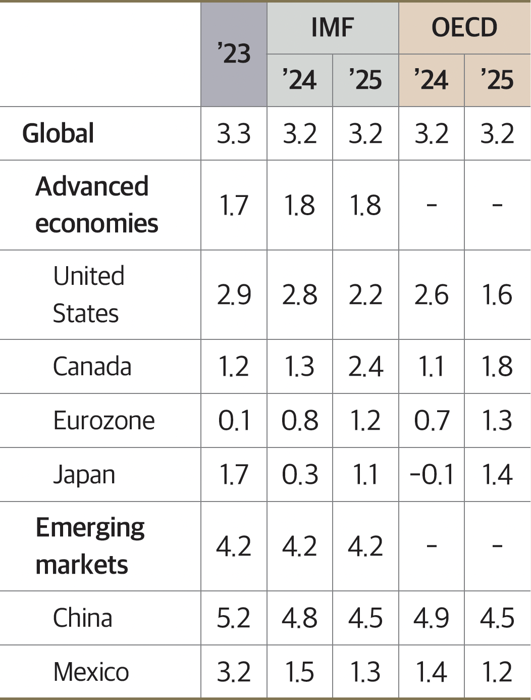
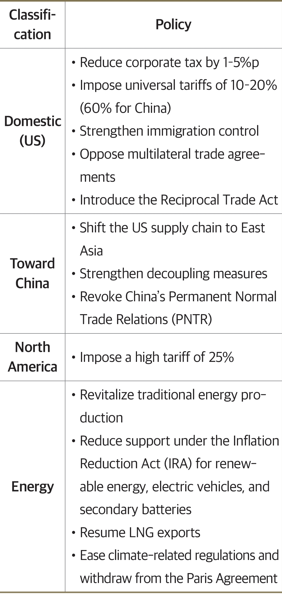
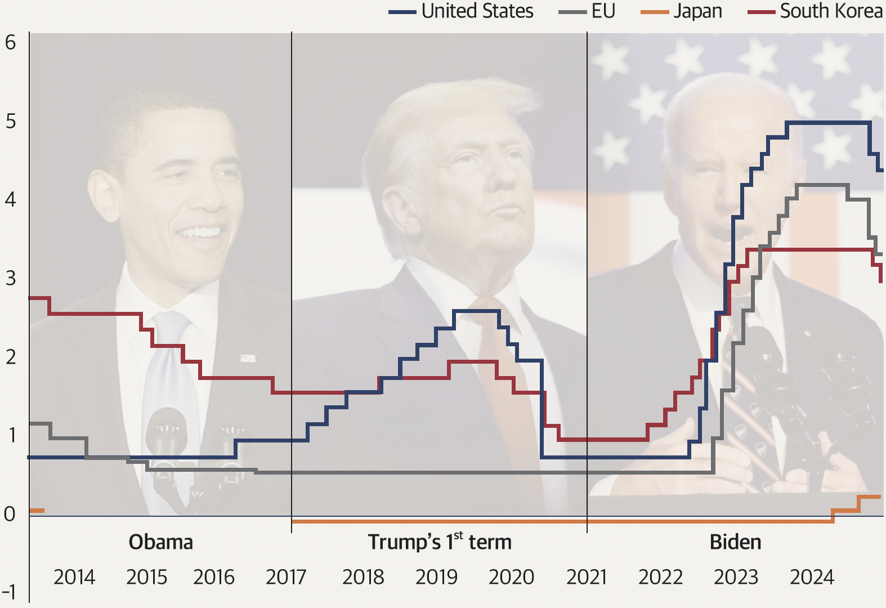
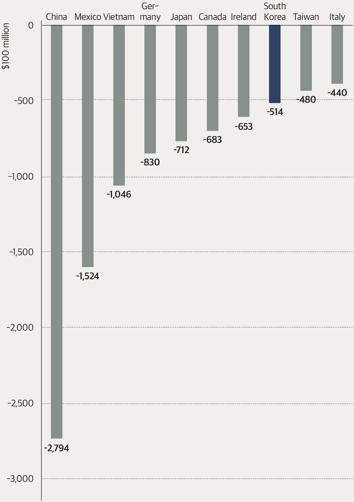

2025 Economic Outlook
Trump 2.0
and Its Impact on the
Global Economy in 2025
In this article, we explore the key risks, both upward and downward, that will shape the global economy in 2025, along with their effects on global trade and industries.
By Seung-suk Lee, In-uk Hwang, and Min-hee Yu of the Korea Economic Research Institute (KERI)
Major Institutions’ World Economic Outlook
 Source: IMF World Economic Outlook(2024. 10.), OECD Economic Outlook, Interim Report(2024. 9.)The global economic growth rate for 2025 is projected to remain at just above 3%. Positive effects are expected from disinflation and monetary easing, especially in major countries, while manufacturing, particularly in the IT sector, is expected to improve. However, growth is unlikely to meet expectations due to the uncertainties surrounding Donald Trump’s reelection. The foundation of a US centric global economy has already been laid by the Biden administration’s decoupling policies, and if Trump’s America First agenda is fully implemented, American dominance of the global economic order is expected to solidify in extreme forms. This will likely result in significant economic shocks and global instability.
Trump’s Major Campaign Pledges
 Source: Trump’s policy brochure (2024)Trump 2.0: Major Upward and Downward Risks
The core of Trump’s secondterm policies, as revealed through his campaign promises, lies in strong protectionism and America First principles. Domestically, tax cuts (1-5% reduction in corporate taxes) and stricter immigration controls are expected, while globally, a 10-20% universal tariff on all imports and a 60% tariff on China will be implemented. Security concerns may also lead to trade restrictions on goods containing critical Chinese technologies or components.
Furthermore, Trump aims to increase US energy exports by revitalizing traditional energy production and has hinted at the possibility of scrapping the Inflation Reduction Act (IRA), creating a sense of crisis for South Korea’s car manufacturers. However, experts suggest that instead of fully abolishing the IRA, it is more likely that US companies will benefit first, while foreign companies will see reduced advantages. These measures are expected to be quickly implemented within the first 100 days of Trump’s presidency, as the primary goal is to offset the loss of tax revenue through tariffs. With little time to prepare for such rapid changes, global economic chaos and early trade conflicts are highly probable.
Trump’s policies could disrupt not only global trade but also the pivoting actions of major central banks. The Federal Reserve, following two interest rate cuts in September and November 2024, has reduced the federal funds rate by 0.75% to 4.75%. Similarly, the European Central Bank (ECB) has already proactively lowered rates. The Bank of Korea has also reduced its base rate from 3.50% to 3.00%. However, the tax cuts, tariffs, and expansionary fiscal policies under Trump’s administration could fuel inflation, forcing the Federal Reserve to reconsider raising interest rates again as the effects of these policies materialize. This would increase the uncertainty surrounding monetary policies. Adam Posen, president of the Peterson Institute for International Economics (PIIE), suggested at an FKI conference that the Federal Reserve might halt its rate cuts and consider raising rates six times or more in 2025.
While the downward risks are more prominent, noteworthy upward risks also exist. The rapid acceleration of artificial intelligence (AI) development is expected to have a massive impact across financial, healthcare, and industrial sectors, as well as everyday life. The continued growth of AI industries is forecasted to boost productivity and improve the global manufacturing economy.
Meanwhile, the heightened uncertainty caused by Trump is expected to disrupt the global economy. However, certain policies, such as tax cuts and deregulation, may serve as limited positive factors for the global economy over time, potentially boosting corporate investment sentiment and household consumption.
Interest Rate Trends in Major Economies
 Source: Bank of KoreaImpact on Global Trade: Focus on the US Trade Surplus Countries (China, Canada, Mexico)
Trump’s protectionist policies, which emphasize America First, will have uneven effects on global trade. The most significant attention is on China, the largest US trade surplus country. After starting a trade war over intellectual property issues during his first term, Trump plans to impose 60% tariffs on China, exacerbating China’s ongoing economic difficulties, including real estate stagnation and local government debt issues. Goldman Sachs predicts that these trade sanctions could reduce China’s growth by 0.7% in 2025, warning that the largescale government stimulus may fail to deliver results.
Other countries with large trade surpluses with the United States, such as Canada and Mexico, are also expected to face higher levels of sanctions. Canada and Mexico, as close neighbors, benefited from the North American Free Trade Agreement (NAFTA), which created a large economic bloc by combining US capital and technology, Canada’s resources, and Mexico’s cheap labor. However, under Trump, these countries are likely to face increased sanctions. Trump has already announced that he will impose a 25% tariff on all goods from Mexico and Canada from the first executive order on January 20, 2025.
Other major economies will also be affected by Trump’s trade policies, though the impact will vary. The intensity of trade sanctions may differ depending on negotiations with the United States, and countries in direct competition with China and other targeted nations may use these sanctions as an opportunity.
“The negative impact of Trump’s
secondterm policies on the global economy
will be much stronger than during his first
term. However, it is clear that the United
States cannot rebuild its manufacturing
sector without Korean support.
South Korea should adopt a winwin
strategy through negotiations and deals.”
“The negative impact of Trump’s
secondterm policies on the global economy
will be much stronger than during his first
term. However, it is clear that the United
States cannot rebuild its manufacturing
sector without Korean support.
South Korea should adopt a winwin
strategy through negotiations and deals.”
Major US Trade Deficit Partners
 Source: Korea International Trade Association (2023)Industries Facing Turmoil: Energy & AI
The energy industry is expected to face the most significant changes. Trump is likely to reverse many of Biden’s carbon neutrality policies. Biden had suspended LNG exports due to environmental concerns, but Trump has nominated Chris Wright, founder of Liberty Energy, a shale gas company, as Energy Secretary, signaling a push to regain control over the global energy market through LNG exports. Trump has also signaled a reduction in renewable energy support under the IRA, causing concern among global renewable energy companies. Shares of European power companies like Denmark’s Ørsted and Germany’s RWE have already dropped, and US market conditions are following suit. Additionally, Trump is expected to cut back on benefits related to electric vehicles and batteries under the IRA, which will impact US manufacturers of these products.
The most promising industry, with explosive growth expected by 2025, is AI. The Korea International Trade Association predicts that the global AI market will grow fourfold by 2030 to $826.7 billion (Korea’s domestic AI market is projected to reach only 1/54 the size of the global market by 2030).
The top six big tech companies—Google, Microsoft, Amazon, NVIDIA, Meta, and Apple—are increasing their R&D investments by more than fourfold, from $238.7 billion in 2015, to maintain dominance in the IT sector. These tech giants are particularly aggressive in expanding their investments in leading AI companies, intensifying the competition for supremacy in the AI market. Given the high barriers to entry in terms of technology and infrastructure development, forming largescale alliances for technological collaboration and efficient tasksharing has become a prevailing trend in the AI industry.
The New Equilibrium in 2025
The negative impact of Trump’s secondterm policies on the global economy will be much stronger than during his first term. While Trump’s first term occurred during a period of relative global stability, his second term will unfold amid high inflation, high interest rates, and regional war risks, leading to significant global ramifications.
While the situation may appear to be filled with negative factors, there is no need to be overly pessimistic. Given the increased stature of South Korean companies, it is clear that the United States cannot rebuild its manufacturing sector without Korean support. South Korea should adopt a winwin strategy through negotiations and deals.
The global economy in 2025, shaped by Trump’s reelection, is expected to enter a period of upheaval and confusion, as all sectors shift toward a new equilibrium.